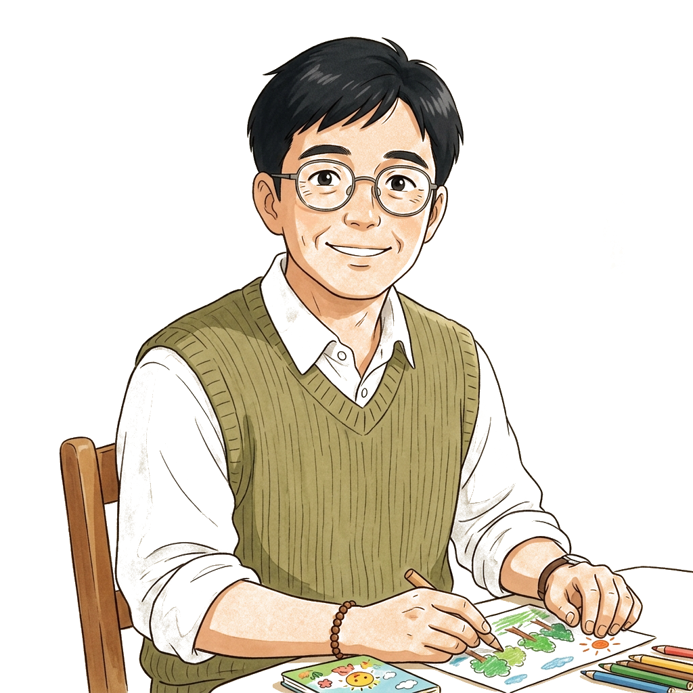

扮演幼儿园园长，直面教师们在日常保教与家园沟通中的情绪困局。 在温情与理性中做出科学决策，修行共情管理之道。

“管理的起点是看见人，共情的起点是感知情绪。”
各位园长，在管理园所前，请静心自问四个问题：
让教师崩溃的往往不是工作累，而是心里苦。接下来，请走进真实的情境……
游戏加载中...
你的管理如林间晨光，照亮了每位教师心底的潮湿。你不仅听懂了她们的叹息，更在她们肩上披上一件温暖却坚固的防雨外衣。